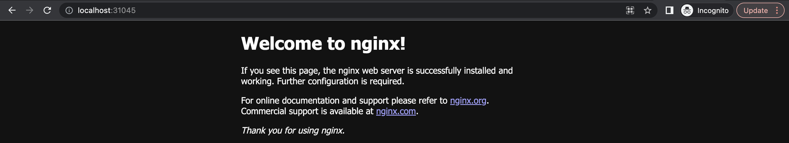
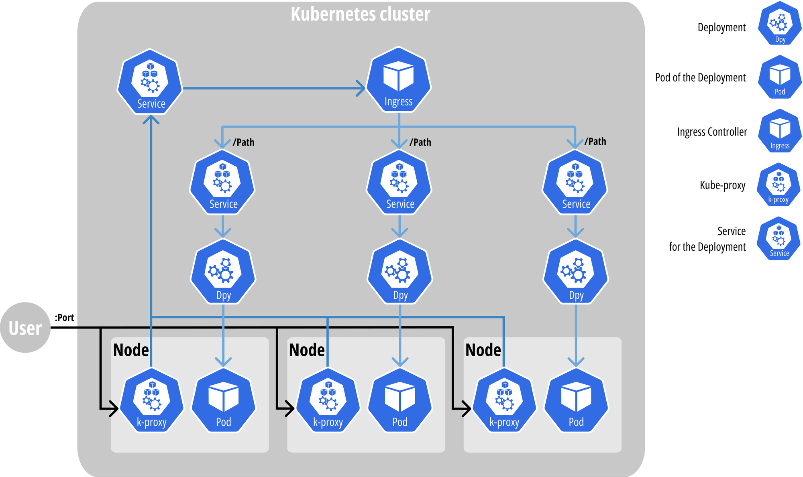
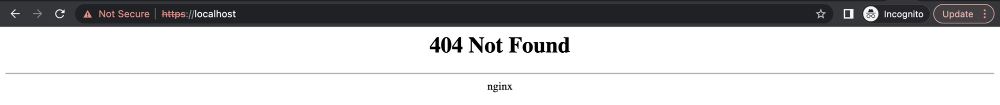
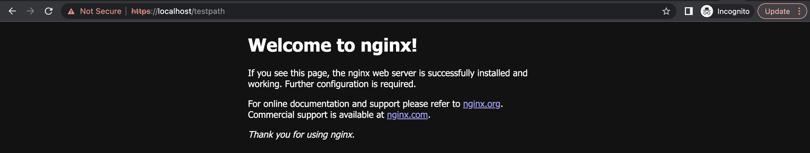

<!DOCTYPE html>
<html><head><title>03. 다양한 리소스들</title><meta charSet="utf-8"/><meta name="viewport" content="width=device-width, initial-scale=1.0"/><meta property="og:title" content="03. 다양한 리소스들"/><meta property="og:description" content="Workload Resource § StatefulSet § Pain point § Deployment 의 Pod 는 “일용직” 과 유사한 측면이 있다. 일용직 노동자는 일을 그만두어도 다른 인력을 쉽게 구해 대체할 수 있듯이, Pod 는 삭제되어도 아무런 영향을 주지 않고 Deployment 에 의해 재생성된다."/><meta property="og:image" content="https://mdg.haeramk.im/static/og-image.png"/><meta property="og:width" content="1200"/><meta property="og:height" content="675"/><link rel="icon" href="../../../../static/icon.png"/><meta name="description" content="Workload Resource § StatefulSet § Pain point § Deployment 의 Pod 는 “일용직” 과 유사한 측면이 있다. 일용직 노동자는 일을 그만두어도 다른 인력을 쉽게 구해 대체할 수 있듯이, Pod 는 삭제되어도 아무런 영향을 주지 않고 Deployment 에 의해 재생성된다."/><meta name="generator" content="Quartz"/><link rel="preconnect" href="https://fonts.googleapis.com"/><link rel="preconnect" href="https://fonts.gstatic.com"/><link href="../../../../index.css" rel="stylesheet" type="text/css" spa-preserve/><link href="https://cdn.jsdelivr.net/npm/katex@0.16.0/dist/katex.min.css" rel="stylesheet" type="text/css" spa-preserve/><link href="https://fonts.googleapis.com/css2?family=IBM Plex Mono&amp;family=Gowun Batang:wght@400;700&amp;family=Gowun Dodum:ital,wght@0,400;0,600;1,400;1,600&amp;display=swap" rel="stylesheet" type="text/css" spa-preserve/><script src="../../../../prescript.js" type="application/javascript" spa-preserve></script><script type="application/javascript" spa-preserve>const fetchData = fetch(`../../../../static/contentIndex.json`).then(data => data.json())</script></head><body data-slug="gardens/kubernetes/originals/kubernetes.jan.2023.si-analytics.ai/03.-다양한-리소스들"><div id="quartz-root" class="page"><div id="quartz-body"><div class="left sidebar"><h1 class="page-title "><a href="../../../..">Madison Digital Garden</a></h1><div class="spacer mobile-only"></div><div class="search "><div id="search-icon"><p>Search</p><div></div><svg tabIndex="0" aria-labelledby="title desc" role="img" xmlns="http://www.w3.org/2000/svg" viewBox="0 0 19.9 19.7"><title id="title">Search</title><desc id="desc">Search</desc><g class="search-path" fill="none"><path stroke-linecap="square" d="M18.5 18.3l-5.4-5.4"></path><circle cx="8" cy="8" r="7"></circle></g></svg></div><div id="search-container"><div id="search-space"><input autocomplete="off" id="search-bar" name="search" type="text" aria-label="Search for something" placeholder="Search for something"/><div id="results-container"></div></div></div></div><div class="darkmode "><input class="toggle" id="darkmode-toggle" type="checkbox" tabIndex="-1"/><label id="toggle-label-light" for="darkmode-toggle" tabIndex="-1"><svg xmlns="http://www.w3.org/2000/svg" xmlnsXlink="http://www.w3.org/1999/xlink" version="1.1" id="dayIcon" x="0px" y="0px" viewBox="0 0 35 35" style="enable-background:new 0 0 35 35;" xmlSpace="preserve"><title>Light mode</title><path d="M6,17.5C6,16.672,5.328,16,4.5,16h-3C0.672,16,0,16.672,0,17.5    S0.672,19,1.5,19h3C5.328,19,6,18.328,6,17.5z M7.5,26c-0.414,0-0.789,0.168-1.061,0.439l-2,2C4.168,28.711,4,29.086,4,29.5    C4,30.328,4.671,31,5.5,31c0.414,0,0.789-0.168,1.06-0.44l2-2C8.832,28.289,9,27.914,9,27.5C9,26.672,8.329,26,7.5,26z M17.5,6    C18.329,6,19,5.328,19,4.5v-3C19,0.672,18.329,0,17.5,0S16,0.672,16,1.5v3C16,5.328,16.671,6,17.5,6z M27.5,9    c0.414,0,0.789-0.168,1.06-0.439l2-2C30.832,6.289,31,5.914,31,5.5C31,4.672,30.329,4,29.5,4c-0.414,0-0.789,0.168-1.061,0.44    l-2,2C26.168,6.711,26,7.086,26,7.5C26,8.328,26.671,9,27.5,9z M6.439,8.561C6.711,8.832,7.086,9,7.5,9C8.328,9,9,8.328,9,7.5    c0-0.414-0.168-0.789-0.439-1.061l-2-2C6.289,4.168,5.914,4,5.5,4C4.672,4,4,4.672,4,5.5c0,0.414,0.168,0.789,0.439,1.06    L6.439,8.561z M33.5,16h-3c-0.828,0-1.5,0.672-1.5,1.5s0.672,1.5,1.5,1.5h3c0.828,0,1.5-0.672,1.5-1.5S34.328,16,33.5,16z     M28.561,26.439C28.289,26.168,27.914,26,27.5,26c-0.828,0-1.5,0.672-1.5,1.5c0,0.414,0.168,0.789,0.439,1.06l2,2    C28.711,30.832,29.086,31,29.5,31c0.828,0,1.5-0.672,1.5-1.5c0-0.414-0.168-0.789-0.439-1.061L28.561,26.439z M17.5,29    c-0.829,0-1.5,0.672-1.5,1.5v3c0,0.828,0.671,1.5,1.5,1.5s1.5-0.672,1.5-1.5v-3C19,29.672,18.329,29,17.5,29z M17.5,7    C11.71,7,7,11.71,7,17.5S11.71,28,17.5,28S28,23.29,28,17.5S23.29,7,17.5,7z M17.5,25c-4.136,0-7.5-3.364-7.5-7.5    c0-4.136,3.364-7.5,7.5-7.5c4.136,0,7.5,3.364,7.5,7.5C25,21.636,21.636,25,17.5,25z"></path></svg></label><label id="toggle-label-dark" for="darkmode-toggle" tabIndex="-1"><svg xmlns="http://www.w3.org/2000/svg" xmlnsXlink="http://www.w3.org/1999/xlink" version="1.1" id="nightIcon" x="0px" y="0px" viewBox="0 0 100 100" style="enable-background='new 0 0 100 100'" xmlSpace="preserve"><title>Dark mode</title><path d="M96.76,66.458c-0.853-0.852-2.15-1.064-3.23-0.534c-6.063,2.991-12.858,4.571-19.655,4.571  C62.022,70.495,50.88,65.88,42.5,57.5C29.043,44.043,25.658,23.536,34.076,6.47c0.532-1.08,0.318-2.379-0.534-3.23  c-0.851-0.852-2.15-1.064-3.23-0.534c-4.918,2.427-9.375,5.619-13.246,9.491c-9.447,9.447-14.65,22.008-14.65,35.369  c0,13.36,5.203,25.921,14.65,35.368s22.008,14.65,35.368,14.65c13.361,0,25.921-5.203,35.369-14.65  c3.872-3.871,7.064-8.328,9.491-13.246C97.826,68.608,97.611,67.309,96.76,66.458z"></path></svg></label></div></div><div class="center"><div class="page-header"><div class="popover-hint"><h1 class="article-title ">03. 다양한 리소스들</h1><p class="content-meta ">Oct 13, 2024, 22 min read</p></div></div><article class="popover-hint"><h2 id="workload-resource">Workload Resource<a aria-hidden="true" tabindex="-1" href="#workload-resource" class="internal"> §</a></h2>
<h3 id="statefulset">StatefulSet<a aria-hidden="true" tabindex="-1" href="#statefulset" class="internal"> §</a></h3>
<h4 id="pain-point">Pain point<a aria-hidden="true" tabindex="-1" href="#pain-point" class="internal"> §</a></h4>
<ol>
<li>Deployment 의 Pod 는 “일용직” 과 유사한 측면이 있다.
<ul>
<li>일용직 노동자는 일을 그만두어도 다른 인력을 쉽게 구해 대체할 수 있듯이,</li>
<li>Pod 는 삭제되어도 아무런 영향을 주지 않고 Deployment 에 의해 재생성된다.</li>
<li>하지만 회사의 중요한 업무를 맡는 직책 (예를 들면 대표이사) 라면?</li>
</ul>
</li>
<li>Deployment 의 Pod 는 이름을 예측할 수 없다.
<ul>
<li>Deployment 를 생성하여 Pod 를 생성하면 <code>nginx-76769d88f7-gsmjb</code> 와 같이 deployment 이름 뒤에 replicaset 과 pod 를 구분짓는 임의의 문자열이 생성되어 작명된다.</li>
<li>하지만 이름을 예측해야 할 필요성이 있다면?</li>
</ul>
</li>
</ol>
<h4 id="statefulset-이란">StatefulSet 이란?<a aria-hidden="true" tabindex="-1" href="#statefulset-이란" class="internal"> §</a></h4>
<ul>
<li>Pain point 1 번의 설명처럼, Deployment 의 Pod 는 언제든지 삭제되고 재생성되어도 문제가 없는 애플리케이션을 위한 것이다.
<ul>
<li>이것을 Stateless 라고 표현한다.</li>
</ul>
</li>
<li>하지만 어떤 애플리케이션의 경우 삭제되거나 재생성되는 것이 영향력을 가질 수 있고, 이러한 애플리케이션을 위한 것이 StatefulSet 이다.
<ul>
<li>StatefulSet 의 파드를 이전에는 “Pet” 이라고 표현했다. 다른 것으로 대체될 수 없는 소중한 것이라는 의미를 전달하기 위해서이다.</li>
</ul>
</li>
<li>StatefulSet 은 대표적으로 다음과 같은 특징을 갖는다.
<ul>
<li>StatefulSet 이 생성한 파드에는 임의의 문자열이 아닌 0부터 시작하는 숫자가 부여된다. 즉, <code>foo</code> 라는 이름의 StatefulSet 을 생성하면 <code>foo-0</code>, <code>foo-1</code> … 등의 이름이 부여된다.
<ul>
<li>이것은 StatefulSet 이 생성하는 Pod 가 소중한 것이라는 개념을 뒷받침해준다. 자신이 기르는 애완동물 이름을 랜덤하게 지어주는 사람은 없다.</li>
</ul>
</li>
<li>StatefulSet 의 Pod 들은 소중하기 때문에 일반적으로 데이터가 안전하게 보관되어야 할 필요가 있다. 따라서 StatefulSet 은 PVC (쿠버네티스의 볼륨 요청 방식, 뒤에서 다룬다) 를 자동으로 생성해주는 기능을 제공한다.</li>
</ul>
</li>
</ul>
<h4 id="usecase">Usecase<a aria-hidden="true" tabindex="-1" href="#usecase" class="internal"> §</a></h4>
<ul>
<li>Database
<ul>
<li>대다수의 DBMS 들은 고가용성 설계를 할 때 단순히 데이터 복제를 하진 않는다.</li>
<li>다양한 방식으로 고가용성 DBMS 가 운영되지만 하나의 사례는 여러개의 DB 인스턴스 중 하나를 Master (혹은 Active), 나머지를 Slave (혹은 Standby) 로 선정하고 Master 가 모든 요청을 처리하되, 데이터 저장 / 변경의 경우 일정 부분의 Slave 에도 반영이 되어야 요청이 처리된 것으로 간주하는 방식이다.
<ul>
<li>이렇게 하면 모든 DB 인스턴스에 정보를 복제하는 것보다 빠르게 요청을 처리할 수 있고, 데이터 이중화라는 본래의 목적도 달성할 수 있기 때문이다.</li>
</ul>
</li>
<li>하지만 이때에는 DB 인스턴스가 삭제되는 것이 가볍게 지나칠 일이 아니기에 함부로 삭제되거나 재생성되어서는 안된다.</li>
<li>또한, DB 의 사용자(클라이언트) 입장에서는 Master 에게 요청을 보내야 하기 때문에 어떤 인스턴스가 Master 인지 알아야 한다. 즉, DB 인스턴스의 이름을 사전에 알고 있어야 된다는 이야기이다.</li>
</ul>
</li>
</ul>
<h3 id="daemonset">DaemonSet<a aria-hidden="true" tabindex="-1" href="#daemonset" class="internal"> §</a></h3>
<h4 id="pain-point-1">Pain point<a aria-hidden="true" tabindex="-1" href="#pain-point-1" class="internal"> §</a></h4>
<ol>
<li>어떤 애플리케이션은 모든 노드에서 작동해야 할 필요가 있다.
<ul>
<li>만일 Deployment 를 이용해 파드를 모든 노드에서 작동하게 하려면, 추가적인 설정이 필요할 뿐더러 클러스터에 노드가 추가되었을 경우 파드의 개수를 수동으로 증가시켜줘야 한다.</li>
</ul>
</li>
</ol>
<h4 id="daemonset-이란">DaemonSet 이란?<a aria-hidden="true" tabindex="-1" href="#daemonset-이란" class="internal"> §</a></h4>
<ul>
<li>DaemonSet 은 모든 노드 각각에 반드시 한개의 Pod 가 작동하도록 보장하는 리소스이다.</li>
</ul>
<h4 id="usecase-1">Usecase<a aria-hidden="true" tabindex="-1" href="#usecase-1" class="internal"> §</a></h4>
<ul>
<li>노드를 관리하는 애플리케이션
<ul>
<li>노드의 Networking 을 담당하는 파드
<ul>
<li>쿠버네티스 시스템 컴포넌트 중 노드 내외부의 통신을 담당하는 Kube-proxy 도 DaemonSet 으로 생성된다.</li>
</ul>
</li>
<li>노드의 로그를 수집하는 파드
<ul>
<li>노드의 시스템 로그 및 파드들이 생산하는 로그를 수집하는 파드의 경우 모든 노드에 배포되게 하기 위해 DaemonSet 으로 생성된다.</li>
</ul>
</li>
</ul>
</li>
</ul>
<h3 id="job">Job<a aria-hidden="true" tabindex="-1" href="#job" class="internal"> §</a></h3>
<h4 id="pain-point-2">Pain point<a aria-hidden="true" tabindex="-1" href="#pain-point-2" class="internal"> §</a></h4>
<ol>
<li>파드가 생성된 후 일정한 작업을 수행하고 종료되었으면 좋겠다.
<ul>
<li>하지만, Deployment 는 파드가 삭제되어도 재생성되기에 이러한 니즈를 충족시킬 수 없다.</li>
</ul>
</li>
</ol>
<h4 id="job-이란">Job 이란?<a aria-hidden="true" tabindex="-1" href="#job-이란" class="internal"> §</a></h4>
<ul>
<li>파드를 생성한 후, 작업이 정상적으로 종료될때까지 파드를 유지하다가 정상 종료 이후 삭제하는 리소스이다.</li>
</ul>
<h4 id="usecase-2">Usecase<a aria-hidden="true" tabindex="-1" href="#usecase-2" class="internal"> §</a></h4>
<ul>
<li>일회성 작업
<ul>
<li>예를 들면, AI/ML 모델 학습용 파드나</li>
<li>시스템 성능 테스트 (벤치마크) 파드 등</li>
</ul>
</li>
</ul>
<h3 id="cronjob">CronJob<a aria-hidden="true" tabindex="-1" href="#cronjob" class="internal"> §</a></h3>
<h4 id="pain-point-3">Pain point<a aria-hidden="true" tabindex="-1" href="#pain-point-3" class="internal"> §</a></h4>
<ol>
<li>주기적으로 어떤 작업을 수행해주기 위해, Job 이 특정한 시간 주기로 생성되었으면 좋겠다.</li>
</ol>
<h4 id="cronjob-이란">CronJob 이란?<a aria-hidden="true" tabindex="-1" href="#cronjob-이란" class="internal"> §</a></h4>
<ul>
<li>지정한 시간 간격 (혹은 규칙) 에 따라 Job 을 생성하여 특정한 작업을 하게 해주는 리소스이다.</li>
</ul>
<h4 id="usecase-3">Usecase<a aria-hidden="true" tabindex="-1" href="#usecase-3" class="internal"> §</a></h4>
<ul>
<li>주기적인 작업을 요하는 애플리케이션
<ul>
<li>예를 들면, 매월 1일자에 저장된 로그를 압축하여 디스크 사용량을 줄이는 파드</li>
</ul>
</li>
</ul>
<h2 id="networking-resource">Networking Resource<a aria-hidden="true" tabindex="-1" href="#networking-resource" class="internal"> §</a></h2>
<blockquote class="callout" data-callout="info">
<div class="callout-title">
                  <div class="callout-icon"><svg xmlns="http://www.w3.org/2000/svg" width="100%" height="100%" viewBox="0 0 24 24" fill="none" stroke="currentColor" stroke-width="2" stroke-linecap="round" stroke-linejoin="round"><circle cx="12" cy="12" r="10"></circle><line x1="12" y1="16" x2="12" y2="12"></line><line x1="12" y1="8" x2="12.01" y2="8"></line></svg></div>
                  <div class="callout-title-inner"><p>네트워크 관련 리소스들은 아래의 Deployment 를 활용한 실습을 통해 소개드리겠습니다. </p></div>
                  
                </div>
</blockquote>
<div data-rehype-pretty-code-fragment><pre style="background-color:var(--shiki-color-background);" tabindex="0" data-language="yaml" data-theme="default"><code data-language="yaml" data-theme="default"><span data-line><span style="color:var(--shiki-token-keyword);">apiVersion</span><span style="color:var(--shiki-token-keyword);">:</span><span style="color:var(--shiki-color-text);"> </span><span style="color:var(--shiki-token-string-expression);">apps/v1</span></span>
<span data-line><span style="color:var(--shiki-token-keyword);">kind</span><span style="color:var(--shiki-token-keyword);">:</span><span style="color:var(--shiki-color-text);"> </span><span style="color:var(--shiki-token-string-expression);">Deployment</span></span>
<span data-line><span style="color:var(--shiki-token-keyword);">metadata</span><span style="color:var(--shiki-token-keyword);">:</span></span>
<span data-line><span style="color:var(--shiki-color-text);">  </span><span style="color:var(--shiki-token-keyword);">name</span><span style="color:var(--shiki-token-keyword);">:</span><span style="color:var(--shiki-color-text);"> </span><span style="color:var(--shiki-token-string-expression);">nginx</span></span>
<span data-line><span style="color:var(--shiki-token-keyword);">spec</span><span style="color:var(--shiki-token-keyword);">:</span></span>
<span data-line><span style="color:var(--shiki-color-text);">  </span><span style="color:var(--shiki-token-keyword);">selector</span><span style="color:var(--shiki-token-keyword);">:</span></span>
<span data-line><span style="color:var(--shiki-color-text);">    </span><span style="color:var(--shiki-token-keyword);">matchLabels</span><span style="color:var(--shiki-token-keyword);">:</span></span>
<span data-line><span style="color:var(--shiki-color-text);">      </span><span style="color:var(--shiki-token-keyword);">app</span><span style="color:var(--shiki-token-keyword);">:</span><span style="color:var(--shiki-color-text);"> </span><span style="color:var(--shiki-token-string-expression);">nginx</span></span>
<span data-line><span style="color:var(--shiki-color-text);">  </span><span style="color:var(--shiki-token-keyword);">template</span><span style="color:var(--shiki-token-keyword);">:</span></span>
<span data-line><span style="color:var(--shiki-color-text);">    </span><span style="color:var(--shiki-token-keyword);">metadata</span><span style="color:var(--shiki-token-keyword);">:</span></span>
<span data-line><span style="color:var(--shiki-color-text);">      </span><span style="color:var(--shiki-token-keyword);">labels</span><span style="color:var(--shiki-token-keyword);">:</span></span>
<span data-line><span style="color:var(--shiki-color-text);">        </span><span style="color:var(--shiki-token-keyword);">app</span><span style="color:var(--shiki-token-keyword);">:</span><span style="color:var(--shiki-color-text);"> </span><span style="color:var(--shiki-token-string-expression);">nginx</span></span>
<span data-line><span style="color:var(--shiki-color-text);">    </span><span style="color:var(--shiki-token-keyword);">spec</span><span style="color:var(--shiki-token-keyword);">:</span></span>
<span data-line><span style="color:var(--shiki-color-text);">      </span><span style="color:var(--shiki-token-keyword);">containers</span><span style="color:var(--shiki-token-keyword);">:</span></span>
<span data-line><span style="color:var(--shiki-color-text);">      - </span><span style="color:var(--shiki-token-keyword);">name</span><span style="color:var(--shiki-token-keyword);">:</span><span style="color:var(--shiki-color-text);"> </span><span style="color:var(--shiki-token-string-expression);">nginx</span></span>
<span data-line><span style="color:var(--shiki-color-text);">        </span><span style="color:var(--shiki-token-keyword);">image</span><span style="color:var(--shiki-token-keyword);">:</span><span style="color:var(--shiki-color-text);"> </span><span style="color:var(--shiki-token-string-expression);">nginx:stable</span></span></code></pre></div>
<h3 id="service">Service<a aria-hidden="true" tabindex="-1" href="#service" class="internal"> §</a></h3>
<h4 id="pain-point-4">Pain point<a aria-hidden="true" tabindex="-1" href="#pain-point-4" class="internal"> §</a></h4>
<ol>
<li>Deployment 를 통해 파드를 여러개 생성했을 때, 단일 진입점이 있었으면 좋겠다.</li>
<li>Pod IP 와 같이 언제든 바뀔 수 있는 진입 주소가 아닌, 고정된 진입 주소가 있으면 좋겠다.</li>
</ol>
<h4 id="service-1">Service?<a aria-hidden="true" tabindex="-1" href="#service-1" class="internal"> §</a></h4>
<ul>
<li>Service 는 Pod 로 접근하는 엔드포인트를 제공하는 리소스이다.</li>
<li>위의 Pain Point 는 이 Service 리소스를 통해 다음과 같이 해결된다:
<ol>
<li>Service 로 들어온 트래픽은 Service 와 연결된 Pod 들로 부하 분산된다.</li>
<li>Service 는 생성시에 Virtual IP 가 할당되기에 접근할 수 있는 고정주소로 사용할 수 있다.
<ul>
<li>추가설명) Pod 는 재생성이 빈번하고 그때마다 IP 를 새로 할당받지만, Service 의 경우에는 재생성될 일이 적고, 생성시에 IP 를 할당받기는 하지만 YAML 파일에 IP 를 직접 명시해 줄 수도 있다. 또한, 쿠버네티스에는 클러스터 내부에서 사용할 용도의 DNS 가 존재하기에, Service 의 IP 주소가 아닌 도메인으로 접속하는 것도 가능하다.</li>
<li>이것에 관해서는 아래의 실습에서도 확인할 수 있다.</li>
</ul>
</li>
</ol>
</li>
</ul>
<h4 id="clusterip-service">ClusterIP Service<a aria-hidden="true" tabindex="-1" href="#clusterip-service" class="internal"> §</a></h4>
<h5 id="clusterip-서비스란">ClusterIP 서비스란?<a aria-hidden="true" tabindex="-1" href="#clusterip-서비스란" class="internal"> §</a></h5>
<ul>
<li>클러스터 <strong>내부 통신용</strong> 엔드포인트를 생성하기 위한 서비스 리소스이다.</li>
<li>Service 리소스를 생성할 때, <code>type</code> 을 지정해주지 않거나 <code>type: ClusterIP</code> 로 지정해주면 해당 리소스가 생성된다.</li>
</ul>
<h5 id="cluster-ip-실습">Cluster IP 실습<a aria-hidden="true" tabindex="-1" href="#cluster-ip-실습" class="internal"> §</a></h5>
<ul>
<li>다음의 명령어 혹은 YAML 파일을 이용해 nginx Deployment 에 ClusterIP 서비스를 연결해준다.</li>
</ul>
<div data-rehype-pretty-code-fragment><pre style="background-color:var(--shiki-color-background);" tabindex="0" data-language="bash" data-theme="default"><code data-language="bash" data-theme="default"><span data-line><span style="color:var(--shiki-token-function);">kubectl</span><span style="color:var(--shiki-color-text);"> </span><span style="color:var(--shiki-token-string);">expose</span><span style="color:var(--shiki-color-text);"> </span><span style="color:var(--shiki-token-string);">deployment</span><span style="color:var(--shiki-color-text);"> </span><span style="color:var(--shiki-token-string);">nginx</span><span style="color:var(--shiki-color-text);"> </span><span style="color:var(--shiki-token-string);">--name</span><span style="color:var(--shiki-color-text);"> </span><span style="color:var(--shiki-token-string);">nginx</span><span style="color:var(--shiki-color-text);"> </span><span style="color:var(--shiki-token-string);">--port</span><span style="color:var(--shiki-color-text);"> </span><span style="color:var(--shiki-token-constant);">80</span></span></code></pre></div>
<div data-rehype-pretty-code-fragment><pre style="background-color:var(--shiki-color-background);" tabindex="0" data-language="yaml" data-theme="default"><code data-language="yaml" data-theme="default"><span data-line><span style="color:var(--shiki-token-keyword);">apiVersion</span><span style="color:var(--shiki-token-keyword);">:</span><span style="color:var(--shiki-color-text);"> </span><span style="color:var(--shiki-token-string-expression);">v1</span></span>
<span data-line><span style="color:var(--shiki-token-keyword);">kind</span><span style="color:var(--shiki-token-keyword);">:</span><span style="color:var(--shiki-color-text);"> </span><span style="color:var(--shiki-token-string-expression);">Service</span></span>
<span data-line><span style="color:var(--shiki-token-keyword);">metadata</span><span style="color:var(--shiki-token-keyword);">:</span></span>
<span data-line><span style="color:var(--shiki-color-text);">  </span><span style="color:var(--shiki-token-keyword);">name</span><span style="color:var(--shiki-token-keyword);">:</span><span style="color:var(--shiki-color-text);"> </span><span style="color:var(--shiki-token-string-expression);">nginx</span></span>
<span data-line><span style="color:var(--shiki-token-keyword);">spec</span><span style="color:var(--shiki-token-keyword);">:</span></span>
<span data-line><span style="color:var(--shiki-color-text);">  </span><span style="color:var(--shiki-token-keyword);">ports</span><span style="color:var(--shiki-token-keyword);">:</span></span>
<span data-line><span style="color:var(--shiki-color-text);">  - </span><span style="color:var(--shiki-token-keyword);">name</span><span style="color:var(--shiki-token-keyword);">:</span><span style="color:var(--shiki-color-text);"> </span><span style="color:var(--shiki-token-string-expression);">http</span></span>
<span data-line><span style="color:var(--shiki-color-text);">    </span><span style="color:var(--shiki-token-keyword);">port</span><span style="color:var(--shiki-token-keyword);">:</span><span style="color:var(--shiki-color-text);"> </span><span style="color:var(--shiki-token-constant);">80</span></span>
<span data-line><span style="color:var(--shiki-color-text);">    </span><span style="color:var(--shiki-token-keyword);">protocol</span><span style="color:var(--shiki-token-keyword);">:</span><span style="color:var(--shiki-color-text);"> </span><span style="color:var(--shiki-token-string-expression);">TCP</span></span>
<span data-line><span style="color:var(--shiki-color-text);">    </span><span style="color:var(--shiki-token-keyword);">targetPort</span><span style="color:var(--shiki-token-keyword);">:</span><span style="color:var(--shiki-color-text);"> </span><span style="color:var(--shiki-token-constant);">80</span></span>
<span data-line><span style="color:var(--shiki-color-text);">  </span><span style="color:var(--shiki-token-keyword);">selector</span><span style="color:var(--shiki-token-keyword);">:</span></span>
<span data-line><span style="color:var(--shiki-color-text);">    </span><span style="color:var(--shiki-token-keyword);">app</span><span style="color:var(--shiki-token-keyword);">:</span><span style="color:var(--shiki-color-text);"> </span><span style="color:var(--shiki-token-string-expression);">nginx</span></span>
<span data-line><span style="color:var(--shiki-color-text);">  </span><span style="color:var(--shiki-token-keyword);">type</span><span style="color:var(--shiki-token-keyword);">:</span><span style="color:var(--shiki-color-text);"> </span><span style="color:var(--shiki-token-string-expression);">ClusterIP</span></span></code></pre></div>
<ul>
<li>생성된 ClusterIP 를 확인한다.</li>
</ul>
<div data-rehype-pretty-code-fragment><pre style="background-color:var(--shiki-color-background);" tabindex="0" data-language="bash" data-theme="default"><code data-language="bash" data-theme="default"><span data-line><span style="color:var(--shiki-token-function);">kubectl</span><span style="color:var(--shiki-color-text);"> </span><span style="color:var(--shiki-token-string);">get</span><span style="color:var(--shiki-color-text);"> </span><span style="color:var(--shiki-token-string);">service</span><span style="color:var(--shiki-color-text);"> </span><span style="color:var(--shiki-token-string);">nginx</span></span></code></pre></div>
<pre><code>NAME	TYPE		CLUSTER-IP	   EXTERNAL-IP   PORT(S)   AGE
nginx   ClusterIP   10.105.103.161   &lt;none>		80/TCP	4m2s
</code></pre>
<ul>
<li>ClusterIP 를 통해 접속이 이루어지는지 확인하기 위해 간단히 curl 이 설치되어있는 파드를 생성한다.</li>
</ul>
<div data-rehype-pretty-code-fragment><pre style="background-color:var(--shiki-color-background);" tabindex="0" data-language="yaml" data-theme="default"><code data-language="yaml" data-theme="default"><span data-line><span style="color:var(--shiki-token-keyword);">apiVersion</span><span style="color:var(--shiki-token-keyword);">:</span><span style="color:var(--shiki-color-text);"> </span><span style="color:var(--shiki-token-string-expression);">v1</span></span>
<span data-line><span style="color:var(--shiki-token-keyword);">kind</span><span style="color:var(--shiki-token-keyword);">:</span><span style="color:var(--shiki-color-text);"> </span><span style="color:var(--shiki-token-string-expression);">Pod</span></span>
<span data-line><span style="color:var(--shiki-token-keyword);">metadata</span><span style="color:var(--shiki-token-keyword);">:</span></span>
<span data-line><span style="color:var(--shiki-color-text);">  </span><span style="color:var(--shiki-token-keyword);">name</span><span style="color:var(--shiki-token-keyword);">:</span><span style="color:var(--shiki-color-text);"> </span><span style="color:var(--shiki-token-string-expression);">curlpod</span></span>
<span data-line><span style="color:var(--shiki-token-keyword);">spec</span><span style="color:var(--shiki-token-keyword);">:</span></span>
<span data-line><span style="color:var(--shiki-color-text);">  </span><span style="color:var(--shiki-token-keyword);">containers</span><span style="color:var(--shiki-token-keyword);">:</span></span>
<span data-line><span style="color:var(--shiki-color-text);">  - </span><span style="color:var(--shiki-token-keyword);">name</span><span style="color:var(--shiki-token-keyword);">:</span><span style="color:var(--shiki-color-text);"> </span><span style="color:var(--shiki-token-string-expression);">curl</span></span>
<span data-line><span style="color:var(--shiki-color-text);">    </span><span style="color:var(--shiki-token-keyword);">image</span><span style="color:var(--shiki-token-keyword);">:</span><span style="color:var(--shiki-color-text);"> </span><span style="color:var(--shiki-token-string-expression);">docker.io/curlimages/curl:7.86.0</span></span>
<span data-line><span style="color:var(--shiki-color-text);">    </span><span style="color:var(--shiki-token-keyword);">command</span><span style="color:var(--shiki-token-keyword);">:</span></span>
<span data-line><span style="color:var(--shiki-color-text);">      - </span><span style="color:var(--shiki-token-string-expression);">sleep</span></span>
<span data-line><span style="color:var(--shiki-color-text);">      - </span><span style="color:var(--shiki-token-string-expression);">&quot;infinity&quot;</span></span>
<span data-line><span style="color:var(--shiki-color-text);">    </span><span style="color:var(--shiki-token-keyword);">imagePullPolicy</span><span style="color:var(--shiki-token-keyword);">:</span><span style="color:var(--shiki-color-text);"> </span><span style="color:var(--shiki-token-string-expression);">IfNotPresent</span></span>
<span data-line><span style="color:var(--shiki-color-text);">  </span><span style="color:var(--shiki-token-keyword);">restartPolicy</span><span style="color:var(--shiki-token-keyword);">:</span><span style="color:var(--shiki-color-text);"> </span><span style="color:var(--shiki-token-string-expression);">Always</span></span></code></pre></div>
<ul>
<li>다음의 명령어를 통해 curl 파드 내에서 통신을 시도해보고, NGINX 홈페이지 HTML 이 조회되는지 확인한다. (사용된 IP 는 다를 수 있다.)</li>
</ul>
<div data-rehype-pretty-code-fragment><pre style="background-color:var(--shiki-color-background);" tabindex="0" data-language="bash" data-theme="default"><code data-language="bash" data-theme="default"><span data-line><span style="color:var(--shiki-token-comment);"># kubectl exec -it curlpod -- curl ${kubectl get service nginx 명령어를 통해 확인한 Internal IP 주소}</span></span>
<span data-line><span style="color:var(--shiki-token-function);">kubectl</span><span style="color:var(--shiki-color-text);"> </span><span style="color:var(--shiki-token-string);">exec</span><span style="color:var(--shiki-color-text);"> </span><span style="color:var(--shiki-token-string);">-it</span><span style="color:var(--shiki-color-text);"> </span><span style="color:var(--shiki-token-string);">curlpod</span><span style="color:var(--shiki-color-text);"> </span><span style="color:var(--shiki-token-string);">--</span><span style="color:var(--shiki-color-text);"> </span><span style="color:var(--shiki-token-string);">curl</span><span style="color:var(--shiki-color-text);"> </span><span style="color:var(--shiki-token-constant);">10.105</span><span style="color:var(--shiki-token-string);">.103.161</span></span></code></pre></div>
<pre><code>&lt;!DOCTYPE html>
&lt;html>
&lt;head>
&lt;title>Welcome to nginx!&lt;/title>
&lt;style>
html { color-scheme: light dark; }
body { width: 35em; margin: 0 auto;
font-family: Tahoma, Verdana, Arial, sans-serif; }
&lt;/style>
&lt;/head>
&lt;body>
&lt;h1>Welcome to nginx!&lt;/h1>
&lt;p>If you see this page, the nginx web server is successfully installed and
working. Further configuration is required.&lt;/p>

&lt;p>For online documentation and support please refer to
&lt;a href=&quot;http://nginx.org/&quot;>nginx.org&lt;/a>.&lt;br/>
Commercial support is available at
&lt;a href=&quot;http://nginx.com/&quot;>nginx.com&lt;/a>.&lt;/p>

&lt;p>&lt;em>Thank you for using nginx.&lt;/em>&lt;/p>
&lt;/body>
&lt;/html>
</code></pre>
<ul>
<li>하지만 ClusterIP 의 Internal IP 는 변경 가능성이 높기 때문에 파드간 통신에서는 Internal IP 를 직접적으로 사용하기 보다는 Domain 를 활용한다.
<ul>
<li>쿠버네티스에는 기본적으로 “CoreDNS” 라는 네임서버가 파드로 배포되어 있고, 클러스터 내부에서 사용되는 Domain 에 대한 처리를 담당한다.</li>
<li>Domiain 은 다음과 같이 구성된다: <code>{서비스 이름}.{네임스페이스 이름}.svc.{클러스터 이름}.local</code></li>
<li>따라서 위에서 생성한 ClusterIP 에 대한 Domain 은 다음과 같다: <code>nginx.default.svc.cluster.local</code>
<ul>
<li>참고) <code>{클러스터 이름}</code> 은 기본값이 <code>cluster</code> 이다. 하지만 클러스터 생성시에 다른 이름을 지정해줄 수도 있으니 정상적으로 작동하지 않는다면, <code>kubectl exec -it 파드 -- cat /etc/resolv.conf</code> 로 DNS 설정을 확인해보자.</li>
</ul>
</li>
</ul>
</li>
<li>다음 명령어를 통해 Internal IP 대신 Domain 으로 NGINX 에 접속해본다.</li>
</ul>
<div data-rehype-pretty-code-fragment><pre style="background-color:var(--shiki-color-background);" tabindex="0" data-language="bash" data-theme="default"><code data-language="bash" data-theme="default"><span data-line><span style="color:var(--shiki-token-comment);"># kubectl exec -it curlpod -- curl ${ClusterIP 의 domain}</span></span>
<span data-line><span style="color:var(--shiki-token-function);">kubectl</span><span style="color:var(--shiki-color-text);"> </span><span style="color:var(--shiki-token-string);">exec</span><span style="color:var(--shiki-color-text);"> </span><span style="color:var(--shiki-token-string);">-it</span><span style="color:var(--shiki-color-text);"> </span><span style="color:var(--shiki-token-string);">curlpod</span><span style="color:var(--shiki-color-text);"> </span><span style="color:var(--shiki-token-string);">--</span><span style="color:var(--shiki-color-text);"> </span><span style="color:var(--shiki-token-string);">curl</span><span style="color:var(--shiki-color-text);"> </span><span style="color:var(--shiki-token-string);">nginx.default.svc.cluster.local</span></span></code></pre></div>
<pre><code>&lt;!DOCTYPE html>
&lt;html>
&lt;head>
&lt;title>Welcome to nginx!&lt;/title>
&lt;style>
html { color-scheme: light dark; }
body { width: 35em; margin: 0 auto;
font-family: Tahoma, Verdana, Arial, sans-serif; }
&lt;/style>
&lt;/head>
&lt;body>
&lt;h1>Welcome to nginx!&lt;/h1>
&lt;p>If you see this page, the nginx web server is successfully installed and
working. Further configuration is required.&lt;/p>

&lt;p>For online documentation and support please refer to
&lt;a href=&quot;http://nginx.org/&quot;>nginx.org&lt;/a>.&lt;br/>
Commercial support is available at
&lt;a href=&quot;http://nginx.com/&quot;>nginx.com&lt;/a>.&lt;/p>

&lt;p>&lt;em>Thank you for using nginx.&lt;/em>&lt;/p>
&lt;/body>
&lt;/html>
</code></pre>
<h4 id="nodeport-service">NodePort Service<a aria-hidden="true" tabindex="-1" href="#nodeport-service" class="internal"> §</a></h4>
<h5 id="nodeport-서비스란">NodePort 서비스란?<a aria-hidden="true" tabindex="-1" href="#nodeport-서비스란" class="internal"> §</a></h5>
<ul>
<li>NodePort 타입의 서비스는 모든 노드의 특정 30000-32767 사이의 포트를 열고, 해당 포트로 들어오는 트래픽을 파드로 전달해줄 수 있게 하는 리소스이다.</li>
<li>보통 클러스터 외부에서 파드에 접근하기 위해 사용한다.</li>
</ul>
<h5 id="nodeport-실습">NodePort 실습<a aria-hidden="true" tabindex="-1" href="#nodeport-실습" class="internal"> §</a></h5>
<ul>
<li>다음의 명령어 혹은 YAML 파일을 통해 NodePort 서비스를 생성한다.</li>
</ul>
<div data-rehype-pretty-code-fragment><pre style="background-color:var(--shiki-color-background);" tabindex="0" data-language="bash" data-theme="default"><code data-language="bash" data-theme="default"><span data-line><span style="color:var(--shiki-token-function);">kubectl</span><span style="color:var(--shiki-color-text);"> </span><span style="color:var(--shiki-token-string);">expose</span><span style="color:var(--shiki-color-text);"> </span><span style="color:var(--shiki-token-string);">deployment</span><span style="color:var(--shiki-color-text);"> </span><span style="color:var(--shiki-token-string);">nginx</span><span style="color:var(--shiki-color-text);"> </span><span style="color:var(--shiki-token-string);">--name</span><span style="color:var(--shiki-color-text);"> </span><span style="color:var(--shiki-token-string);">nginx-np</span><span style="color:var(--shiki-color-text);"> </span><span style="color:var(--shiki-token-string);">--type</span><span style="color:var(--shiki-color-text);"> </span><span style="color:var(--shiki-token-string);">NodePort</span><span style="color:var(--shiki-color-text);"> </span><span style="color:var(--shiki-token-string);">--port</span><span style="color:var(--shiki-color-text);"> </span><span style="color:var(--shiki-token-constant);">80</span></span></code></pre></div>
<div data-rehype-pretty-code-fragment><pre style="background-color:var(--shiki-color-background);" tabindex="0" data-language="yaml" data-theme="default"><code data-language="yaml" data-theme="default"><span data-line><span style="color:var(--shiki-token-keyword);">apiVersion</span><span style="color:var(--shiki-token-keyword);">:</span><span style="color:var(--shiki-color-text);"> </span><span style="color:var(--shiki-token-string-expression);">v1</span></span>
<span data-line><span style="color:var(--shiki-token-keyword);">kind</span><span style="color:var(--shiki-token-keyword);">:</span><span style="color:var(--shiki-color-text);"> </span><span style="color:var(--shiki-token-string-expression);">Service</span></span>
<span data-line><span style="color:var(--shiki-token-keyword);">metadata</span><span style="color:var(--shiki-token-keyword);">:</span></span>
<span data-line><span style="color:var(--shiki-color-text);">  </span><span style="color:var(--shiki-token-keyword);">name</span><span style="color:var(--shiki-token-keyword);">:</span><span style="color:var(--shiki-color-text);"> </span><span style="color:var(--shiki-token-string-expression);">nginx-np</span></span>
<span data-line><span style="color:var(--shiki-token-keyword);">spec</span><span style="color:var(--shiki-token-keyword);">:</span></span>
<span data-line><span style="color:var(--shiki-color-text);">  </span><span style="color:var(--shiki-token-keyword);">ports</span><span style="color:var(--shiki-token-keyword);">:</span></span>
<span data-line><span style="color:var(--shiki-color-text);">  - </span><span style="color:var(--shiki-token-keyword);">name</span><span style="color:var(--shiki-token-keyword);">:</span><span style="color:var(--shiki-color-text);"> </span><span style="color:var(--shiki-token-string-expression);">http</span></span>
<span data-line><span style="color:var(--shiki-color-text);">    </span><span style="color:var(--shiki-token-keyword);">nodePort</span><span style="color:var(--shiki-token-keyword);">:</span><span style="color:var(--shiki-color-text);"> </span><span style="color:var(--shiki-token-constant);">31045</span></span>
<span data-line><span style="color:var(--shiki-color-text);">    </span><span style="color:var(--shiki-token-keyword);">port</span><span style="color:var(--shiki-token-keyword);">:</span><span style="color:var(--shiki-color-text);"> </span><span style="color:var(--shiki-token-constant);">80</span></span>
<span data-line><span style="color:var(--shiki-color-text);">    </span><span style="color:var(--shiki-token-keyword);">protocol</span><span style="color:var(--shiki-token-keyword);">:</span><span style="color:var(--shiki-color-text);"> </span><span style="color:var(--shiki-token-string-expression);">TCP</span></span>
<span data-line><span style="color:var(--shiki-color-text);">    </span><span style="color:var(--shiki-token-keyword);">targetPort</span><span style="color:var(--shiki-token-keyword);">:</span><span style="color:var(--shiki-color-text);"> </span><span style="color:var(--shiki-token-constant);">80</span></span>
<span data-line><span style="color:var(--shiki-color-text);">  </span><span style="color:var(--shiki-token-keyword);">selector</span><span style="color:var(--shiki-token-keyword);">:</span></span>
<span data-line><span style="color:var(--shiki-color-text);">    </span><span style="color:var(--shiki-token-keyword);">app</span><span style="color:var(--shiki-token-keyword);">:</span><span style="color:var(--shiki-color-text);"> </span><span style="color:var(--shiki-token-string-expression);">nginx</span></span>
<span data-line><span style="color:var(--shiki-color-text);">  </span><span style="color:var(--shiki-token-keyword);">type</span><span style="color:var(--shiki-token-keyword);">:</span><span style="color:var(--shiki-color-text);"> </span><span style="color:var(--shiki-token-string-expression);">NodePort</span></span></code></pre></div>
<ul>
<li>생성한 NodePort 서비스를 확인한다.</li>
</ul>
<div data-rehype-pretty-code-fragment><pre style="background-color:var(--shiki-color-background);" tabindex="0" data-language="bash" data-theme="default"><code data-language="bash" data-theme="default"><span data-line><span style="color:var(--shiki-token-function);">kubectl</span><span style="color:var(--shiki-color-text);"> </span><span style="color:var(--shiki-token-string);">get</span><span style="color:var(--shiki-color-text);"> </span><span style="color:var(--shiki-token-string);">service</span><span style="color:var(--shiki-color-text);"> </span><span style="color:var(--shiki-token-string);">nginx-np</span></span></code></pre></div>
<pre><code>NAME	   TYPE	   CLUSTER-IP	   EXTERNAL-IP   PORT(S)		AGE
nginx-np   NodePort   10.110.201.171   &lt;none>		80:31045/TCP   118s
</code></pre>
<ul>
<li>참고) YAML 파일을 이용하면 개방할 30000 번대 포트를 직접 지정할 수 있지만, kubectl cli 를 이용하면 30000번대의 임의의 포트가 개방된다.</li>
<li><code>PORT(S)</code> 항목에 바인드되어있는 30000 번대 포트를 통해 브라우저로 접속해본다.</li>
</ul>
<p></p>
<h4 id="lb-service">LB Service<a aria-hidden="true" tabindex="-1" href="#lb-service" class="internal"> §</a></h4>
<h5 id="lbloadbalancer-서비스란">LB(LoadBalancer) 서비스란?<a aria-hidden="true" tabindex="-1" href="#lbloadbalancer-서비스란" class="internal"> §</a></h5>
<ul>
<li>클러스터 외부의 로드밸런서와 연동하여 외부의 트래픽을 클러스터 내부의 파드로 전달하는 리소스</li>
</ul>
<h5 id="lb-서비스-vs-nodeport-서비스">LB 서비스 vs NodePort 서비스<a aria-hidden="true" tabindex="-1" href="#lb-서비스-vs-nodeport-서비스" class="internal"> §</a></h5>
<ul>
<li>LB 서비스와 NodePort 서비스 모두 외부의 트래픽을 파드에 전달한다는 점에서는 동일하다.</li>
<li>하지만, 두 서비스가 사용되는 Usecase 는 많이 다르다.
<ul>
<li>LB 서비스의 경우에는 클러스터 외부의 로드밸런서 (SW 혹은 HW) 와 연동되어야 하기 때문에 온프레미스 클러스터에서는 사용하기 힘들다.
<ul>
<li>쿠버네티스 클러스터가 클라우드에서 작동하는 경우에는 Cloud controller 를 이용해 AWS 의 ALB 와 같은 리소스를 자동으로 생성하고,</li>
<li>Docker desktop 혹은 minikube 의 경우에는 플러그인이 있어 자동적으로 처리해주지만 온프레미스 클러스터에서 안정적으로 사용할 수 있는 솔루션은 부족하다.</li>
</ul>
</li>
</ul>
</li>
<li>따라서 온프레미스 클러스터에서는 LB 서비스보다는 NodePort 를 이용해 외부의 트래픽을 전달받는다.
<ul>
<li>참고) NodePort 의 포트 범위가 30000-32767 이기에, 만일 80 이나 443 와 같은 Known port 로 트래픽을 받을 때에는 아래와 같이 앞단에 HAProxy 같은 프록시를 구성하기도 한다.</li>
</ul>
</li>
</ul>
<pre><code>                                             +-----------------------------+
                                 +----> 32000/TCP(NodePort BE)    K8s Node |
                                 |           +-----------------------------+
                                 |
        +--------------------+   |           +-----------------------------+
--> 80/TCP(FE)       HAPROXY |---+----> 32000/TCP(NodePort BE)    K8s Node |
        +--------------------+   |           +-----------------------------+
                                 |
                                 |           +-----------------------------+
                                 +----> 32000/TCP(NodePort BE)    K8s Node |
                                             +-----------------------------+
</code></pre>
<h3 id="ingress">Ingress<a aria-hidden="true" tabindex="-1" href="#ingress" class="internal"> §</a></h3>
<h4 id="ingress-란">Ingress 란?<a aria-hidden="true" tabindex="-1" href="#ingress-란" class="internal"> §</a></h4>
<ul>
<li>ingress 는 L7 라우팅 규칙을 정의하는 리소스이다.</li>
</ul>
<h4 id="ingress-ingress-controller">Ingress? Ingress controller?<a aria-hidden="true" tabindex="-1" href="#ingress-ingress-controller" class="internal"> §</a></h4>
<ul>
<li>쿠버네티스의 다른 리소스들과 마찬가지로, “리소스”, “리소스-컨트롤러” 와의 관계와 같다.
<ul>
<li>“리소스”는 객체이고, 해당 객체에 명시된 내용에 따라 클러스터의 상태를 관리하는 프로세스(컨테이너) 가 “리소스-컨트롤러” 이듯이,</li>
<li>Ingress 는 객체이고, 생성된 Ingress 에 따라 L7 라우팅 규칙을 업데이트하고 그에 따라 작동할 수 있게 하는 것이 Ingress controller 이다.</li>
<li>NGINX 에 비유하자면, Ingress 는 <code>nginx.conf</code> 파일이고, Ingress controller 는 NGINX 프로세스이다.</li>
</ul>
</li>
<li>쿠버네티스 내부에는 Ingress 리소스가 정의되어 있지만, 이것을 처리하는 컨트롤러 (Ingress controller)는 구현되어있지 않고 별도의 설치가 필요하다.
<ul>
<li>이것은 쿠버네티스가 직접 소프트웨어 L7 로드밸런서를 구현하기보다는 NGINX, HAProxy 같은 상용 솔루션들을 활용하고 사용자로 하여금 익숙한 솔루션을 선택할 수 있도록 한 것이다.</li>
<li>다만, 컨트롤러도 디플로이먼트의 형태로 구성되기에 이것을 외부에 노출시키기 위해 LB 서비스 혹은 NodePort 서비스의 도움이 필요하다.</li>
</ul>
</li>
</ul>
<h4 id="ingress-의-사용-이유">Ingress 의 사용 이유<a aria-hidden="true" tabindex="-1" href="#ingress-의-사용-이유" class="internal"> §</a></h4>
<ul>
<li>NGINX, HAProxy 같은 일반적인 소프트웨어 L7 로드밸런서를 사용하는 이유와 같다.</li>
<li>즉, 클러스터로 진입하는 제일 앞단에서 TLS/SSL 인증서를 처리하거나, Application layer 에서의 라우팅을 이용해 클러스터 내부의 백엔드로 트래픽을 전달하는 용도로 사용한다.</li>
<li>따라서 원하는 파드를 외부에 노출시키고자 할 때 LB 혹은 NodePort 를 이용해 직접 노출시키는 것이 아닌 Ingress controller 만 외부에 노출시켜놓고 이것이 전달해주는 트래픽을 받을 수 있도록 Ingress 리소스를 생성해주면 된다.</li>
</ul>
<h4 id="ingress-의-작동-원리">Ingress 의 작동 원리<a aria-hidden="true" tabindex="-1" href="#ingress-의-작동-원리" class="internal"> §</a></h4>
<p></p>
<ul>
<li>Ingress controller 를 설치하고 외부에 노출한 뒤에는, Ingress 를 생성했을 때에 그에 맞는 L7 라우팅 규칙이 생성되어 외부의 트래픽이 파드로 전달되는 방식으로 작동한다.
<ul>
<li>트래픽을 규칙에 따라 파드로 전달할때에는, Ingress controller pod → target pod 간 통신, 즉, 클러스터 내부의 통신이기에 Cluster IP 타입의 서비스를 이용한다.</li>
<li>즉, L7 로드밸런서로 비유하자면, FE 는 Ingress controller 를 클러스터 외부에 노출시키는 LB type service 이고, BE 는 클러스터 내부의 파드에 연결된 Cluster IP type service 이며, 이 둘을 연결지어주는 규칙을 Ingress 리소스로 정의하게 되는 셈이다.</li>
</ul>
</li>
</ul>
<h4 id="실습">실습<a aria-hidden="true" tabindex="-1" href="#실습" class="internal"> §</a></h4>
<ul>
<li>먼저, Ingress 를 처리할 Ingress controller 를 설치한다.
<ul>
<li>아래의 명령어는 Kubernetes 에서 공식적으로 지원하는 Ingress controller 인 NGINX ingress controller 를 <code>ingress-nginx</code> 네임스페이스에 설치한다.</li>
</ul>
</li>
</ul>
<div data-rehype-pretty-code-fragment><pre style="background-color:var(--shiki-color-background);" tabindex="0" data-language="bash" data-theme="default"><code data-language="bash" data-theme="default"><span data-line><span style="color:var(--shiki-token-function);">kubectl</span><span style="color:var(--shiki-color-text);"> </span><span style="color:var(--shiki-token-string);">apply</span><span style="color:var(--shiki-color-text);"> </span><span style="color:var(--shiki-token-string);">-f</span><span style="color:var(--shiki-color-text);"> </span><span style="color:var(--shiki-token-string);">https://raw.githubusercontent.com/kubernetes/ingress-nginx/controller-v1.5.1/deploy/static/provider/cloud/deploy.yaml</span></span></code></pre></div>
<ul>
<li><code>ingress-nginx</code> 네임스페이스에 인그레스 컨트롤러가 정상적으로 설치되었는지 확인한다.</li>
</ul>
<div data-rehype-pretty-code-fragment><pre style="background-color:var(--shiki-color-background);" tabindex="0" data-language="bash" data-theme="default"><code data-language="bash" data-theme="default"><span data-line><span style="color:var(--shiki-token-function);">kubectl</span><span style="color:var(--shiki-color-text);"> </span><span style="color:var(--shiki-token-string);">-n</span><span style="color:var(--shiki-color-text);"> </span><span style="color:var(--shiki-token-string);">ingress-nginx</span><span style="color:var(--shiki-color-text);"> </span><span style="color:var(--shiki-token-string);">get</span><span style="color:var(--shiki-color-text);"> </span><span style="color:var(--shiki-token-string);">all</span></span></code></pre></div>
<ul>
<li><code>https://localhost</code> 로 접속하여 <code>404: Not Found</code> 화면이 보이는지 확인한다.
<ul>
<li><code>404: Not Found</code> 가 보이는 것은 Ingress controller 가 정상적으로 작동하고 있으나, root path 에 대한 ingress 가 생성되지 않았기에 자원을 찾을 수 없다는 문구를 보여주는 것이다.</li>
</ul>
</li>
</ul>
<p></p>
<ul>
<li>신규 Ingress 를 생성한다.
<ul>
<li>본 Ingress 가 작동하기 위해서는 <code>nginx</code> 라는 이름의 ClusterIP 서비스와, 해당 서비스가 노출하고 있는 Deployment 등의 리소스가 필요하다. (앞선 실습에서 이미 생성되었다고 가정)</li>
</ul>
</li>
</ul>
<div data-rehype-pretty-code-fragment><pre style="background-color:var(--shiki-color-background);" tabindex="0" data-language="yaml" data-theme="default"><code data-language="yaml" data-theme="default"><span data-line><span style="color:var(--shiki-token-keyword);">apiVersion</span><span style="color:var(--shiki-token-keyword);">:</span><span style="color:var(--shiki-color-text);"> </span><span style="color:var(--shiki-token-string-expression);">networking.k8s.io/v1</span></span>
<span data-line><span style="color:var(--shiki-token-keyword);">kind</span><span style="color:var(--shiki-token-keyword);">:</span><span style="color:var(--shiki-color-text);"> </span><span style="color:var(--shiki-token-string-expression);">Ingress</span></span>
<span data-line><span style="color:var(--shiki-token-keyword);">metadata</span><span style="color:var(--shiki-token-keyword);">:</span></span>
<span data-line><span style="color:var(--shiki-color-text);">  </span><span style="color:var(--shiki-token-keyword);">name</span><span style="color:var(--shiki-token-keyword);">:</span><span style="color:var(--shiki-color-text);"> </span><span style="color:var(--shiki-token-string-expression);">nginx-ing</span></span>
<span data-line><span style="color:var(--shiki-color-text);">  </span><span style="color:var(--shiki-token-keyword);">annotations</span><span style="color:var(--shiki-token-keyword);">:</span></span>
<span data-line><span style="color:var(--shiki-color-text);">    </span><span style="color:var(--shiki-token-keyword);">nginx.ingress.kubernetes.io/rewrite-target</span><span style="color:var(--shiki-token-keyword);">:</span><span style="color:var(--shiki-color-text);"> </span><span style="color:var(--shiki-token-string-expression);">/</span></span>
<span data-line><span style="color:var(--shiki-token-keyword);">spec</span><span style="color:var(--shiki-token-keyword);">:</span></span>
<span data-line><span style="color:var(--shiki-color-text);">  </span><span style="color:var(--shiki-token-keyword);">ingressClassName</span><span style="color:var(--shiki-token-keyword);">:</span><span style="color:var(--shiki-color-text);"> </span><span style="color:var(--shiki-token-string-expression);">nginx</span></span>
<span data-line><span style="color:var(--shiki-color-text);">  </span><span style="color:var(--shiki-token-keyword);">rules</span><span style="color:var(--shiki-token-keyword);">:</span></span>
<span data-line><span style="color:var(--shiki-color-text);">  - </span><span style="color:var(--shiki-token-keyword);">host</span><span style="color:var(--shiki-token-keyword);">:</span><span style="color:var(--shiki-color-text);"> </span><span style="color:var(--shiki-token-string-expression);">localhost</span></span>
<span data-line><span style="color:var(--shiki-color-text);">    </span><span style="color:var(--shiki-token-keyword);">http</span><span style="color:var(--shiki-token-keyword);">:</span></span>
<span data-line><span style="color:var(--shiki-color-text);">      </span><span style="color:var(--shiki-token-keyword);">paths</span><span style="color:var(--shiki-token-keyword);">:</span></span>
<span data-line><span style="color:var(--shiki-color-text);">      - </span><span style="color:var(--shiki-token-keyword);">path</span><span style="color:var(--shiki-token-keyword);">:</span><span style="color:var(--shiki-color-text);"> </span><span style="color:var(--shiki-token-string-expression);">/testpath</span></span>
<span data-line><span style="color:var(--shiki-color-text);">        </span><span style="color:var(--shiki-token-keyword);">pathType</span><span style="color:var(--shiki-token-keyword);">:</span><span style="color:var(--shiki-color-text);"> </span><span style="color:var(--shiki-token-string-expression);">Prefix</span></span>
<span data-line><span style="color:var(--shiki-color-text);">        </span><span style="color:var(--shiki-token-keyword);">backend</span><span style="color:var(--shiki-token-keyword);">:</span></span>
<span data-line><span style="color:var(--shiki-color-text);">          </span><span style="color:var(--shiki-token-keyword);">service</span><span style="color:var(--shiki-token-keyword);">:</span></span>
<span data-line><span style="color:var(--shiki-color-text);">            </span><span style="color:var(--shiki-token-keyword);">name</span><span style="color:var(--shiki-token-keyword);">:</span><span style="color:var(--shiki-color-text);"> </span><span style="color:var(--shiki-token-string-expression);">nginx</span></span>
<span data-line><span style="color:var(--shiki-color-text);">            </span><span style="color:var(--shiki-token-keyword);">port</span><span style="color:var(--shiki-token-keyword);">:</span></span>
<span data-line><span style="color:var(--shiki-color-text);">              </span><span style="color:var(--shiki-token-keyword);">number</span><span style="color:var(--shiki-token-keyword);">:</span><span style="color:var(--shiki-color-text);"> </span><span style="color:var(--shiki-token-constant);">80</span></span></code></pre></div>
<ul>
<li>생성한 Ingress 에는 host 가 <code>localhost</code> 이고 path 가 <code>/testpath</code> 일때 “nginx” 라는 이름의 서비스 오브젝트로 트래픽을 전달하도록 되어 있다. 따라서 브라우저에서 <code>https://localhost/testpath</code> 로 접속해본다.</li>
</ul>
<p></p>
<h2 id="생성한-리소스-정리">생성한 리소스 정리<a aria-hidden="true" tabindex="-1" href="#생성한-리소스-정리" class="internal"> §</a></h2>
<div data-rehype-pretty-code-fragment><pre style="background-color:var(--shiki-color-background);" tabindex="0" data-language="bash" data-theme="default"><code data-language="bash" data-theme="default"><span data-line><span style="color:var(--shiki-token-function);">kubectl</span><span style="color:var(--shiki-color-text);"> </span><span style="color:var(--shiki-token-string);">delete</span><span style="color:var(--shiki-color-text);"> </span><span style="color:var(--shiki-token-string);">deployment</span><span style="color:var(--shiki-color-text);"> </span><span style="color:var(--shiki-token-string);">nginx</span></span>
<span data-line><span style="color:var(--shiki-token-function);">kubectl</span><span style="color:var(--shiki-color-text);"> </span><span style="color:var(--shiki-token-string);">delete</span><span style="color:var(--shiki-color-text);"> </span><span style="color:var(--shiki-token-string);">service</span><span style="color:var(--shiki-color-text);"> </span><span style="color:var(--shiki-token-string);">nginx</span></span>
<span data-line><span style="color:var(--shiki-token-function);">kubectl</span><span style="color:var(--shiki-color-text);"> </span><span style="color:var(--shiki-token-string);">delete</span><span style="color:var(--shiki-color-text);"> </span><span style="color:var(--shiki-token-string);">service</span><span style="color:var(--shiki-color-text);"> </span><span style="color:var(--shiki-token-string);">nginx-np</span></span>
<span data-line><span style="color:var(--shiki-token-function);">kubectl</span><span style="color:var(--shiki-color-text);"> </span><span style="color:var(--shiki-token-string);">delete</span><span style="color:var(--shiki-color-text);"> </span><span style="color:var(--shiki-token-string);">pod</span><span style="color:var(--shiki-color-text);"> </span><span style="color:var(--shiki-token-string);">curlutils</span></span>
<span data-line><span style="color:var(--shiki-token-function);">kubectl</span><span style="color:var(--shiki-color-text);"> </span><span style="color:var(--shiki-token-string);">delete</span><span style="color:var(--shiki-color-text);"> </span><span style="color:var(--shiki-token-string);">ingress</span><span style="color:var(--shiki-color-text);"> </span><span style="color:var(--shiki-token-string);">nginx-ing</span></span>
<span data-line><span style="color:var(--shiki-token-function);">kubectl</span><span style="color:var(--shiki-color-text);"> </span><span style="color:var(--shiki-token-string);">delete</span><span style="color:var(--shiki-color-text);"> </span><span style="color:var(--shiki-token-string);">-f</span><span style="color:var(--shiki-color-text);"> </span><span style="color:var(--shiki-token-string);">https://raw.githubusercontent.com/kubernetes/ingress-nginx/controller-v1.5.1/deploy/static/provider/cloud/deploy.yaml</span></span></code></pre></div></article></div><div class="right sidebar"><div class="graph "><h3>Graph View</h3><div class="graph-outer"><div id="graph-container" data-cfg="{&quot;drag&quot;:true,&quot;zoom&quot;:true,&quot;depth&quot;:1,&quot;scale&quot;:1.1,&quot;repelForce&quot;:0.5,&quot;centerForce&quot;:0.3,&quot;linkDistance&quot;:30,&quot;fontSize&quot;:0.6,&quot;opacityScale&quot;:1,&quot;showTags&quot;:true,&quot;removeTags&quot;:[]}"></div><svg version="1.1" id="global-graph-icon" xmlns="http://www.w3.org/2000/svg" xmlnsXlink="http://www.w3.org/1999/xlink" x="0px" y="0px" viewBox="0 0 55 55" fill="currentColor" xmlSpace="preserve"><path d="M49,0c-3.309,0-6,2.691-6,6c0,1.035,0.263,2.009,0.726,2.86l-9.829,9.829C32.542,17.634,30.846,17,29,17
	s-3.542,0.634-4.898,1.688l-7.669-7.669C16.785,10.424,17,9.74,17,9c0-2.206-1.794-4-4-4S9,6.794,9,9s1.794,4,4,4
	c0.74,0,1.424-0.215,2.019-0.567l7.669,7.669C21.634,21.458,21,23.154,21,25s0.634,3.542,1.688,4.897L10.024,42.562
	C8.958,41.595,7.549,41,6,41c-3.309,0-6,2.691-6,6s2.691,6,6,6s6-2.691,6-6c0-1.035-0.263-2.009-0.726-2.86l12.829-12.829
	c1.106,0.86,2.44,1.436,3.898,1.619v10.16c-2.833,0.478-5,2.942-5,5.91c0,3.309,2.691,6,6,6s6-2.691,6-6c0-2.967-2.167-5.431-5-5.91
	v-10.16c1.458-0.183,2.792-0.759,3.898-1.619l7.669,7.669C41.215,39.576,41,40.26,41,41c0,2.206,1.794,4,4,4s4-1.794,4-4
	s-1.794-4-4-4c-0.74,0-1.424,0.215-2.019,0.567l-7.669-7.669C36.366,28.542,37,26.846,37,25s-0.634-3.542-1.688-4.897l9.665-9.665
	C46.042,11.405,47.451,12,49,12c3.309,0,6-2.691,6-6S52.309,0,49,0z M11,9c0-1.103,0.897-2,2-2s2,0.897,2,2s-0.897,2-2,2
	S11,10.103,11,9z M6,51c-2.206,0-4-1.794-4-4s1.794-4,4-4s4,1.794,4,4S8.206,51,6,51z M33,49c0,2.206-1.794,4-4,4s-4-1.794-4-4
	s1.794-4,4-4S33,46.794,33,49z M29,31c-3.309,0-6-2.691-6-6s2.691-6,6-6s6,2.691,6,6S32.309,31,29,31z M47,41c0,1.103-0.897,2-2,2
	s-2-0.897-2-2s0.897-2,2-2S47,39.897,47,41z M49,10c-2.206,0-4-1.794-4-4s1.794-4,4-4s4,1.794,4,4S51.206,10,49,10z"></path></svg></div><div id="global-graph-outer"><div id="global-graph-container" data-cfg="{&quot;drag&quot;:true,&quot;zoom&quot;:true,&quot;depth&quot;:-1,&quot;scale&quot;:0.9,&quot;repelForce&quot;:0.5,&quot;centerForce&quot;:0.3,&quot;linkDistance&quot;:30,&quot;fontSize&quot;:0.6,&quot;opacityScale&quot;:1,&quot;showTags&quot;:true,&quot;removeTags&quot;:[]}"></div></div></div><div class="toc desktop-only"><button type="button" id="toc"><h3>Table of Contents</h3><svg xmlns="http://www.w3.org/2000/svg" width="24" height="24" viewBox="0 0 24 24" fill="none" stroke="currentColor" stroke-width="2" stroke-linecap="round" stroke-linejoin="round" class="fold"><polyline points="6 9 12 15 18 9"></polyline></svg></button><div id="toc-content"><ul class="overflow"><li class="depth-0"><a href="#workload-resource" data-for="workload-resource">Workload Resource</a></li><li class="depth-1"><a href="#statefulset" data-for="statefulset">StatefulSet</a></li><li class="depth-1"><a href="#daemonset" data-for="daemonset">DaemonSet</a></li><li class="depth-1"><a href="#job" data-for="job">Job</a></li><li class="depth-1"><a href="#cronjob" data-for="cronjob">CronJob</a></li><li class="depth-0"><a href="#networking-resource" data-for="networking-resource">Networking Resource</a></li><li class="depth-1"><a href="#service" data-for="service">Service</a></li><li class="depth-1"><a href="#ingress" data-for="ingress">Ingress</a></li><li class="depth-0"><a href="#생성한-리소스-정리" data-for="생성한-리소스-정리">생성한 리소스 정리</a></li></ul></div></div><div class="backlinks "><h3>Backlinks</h3><ul class="overflow"><li><a href="../../../../gardens/kubernetes/originals/kubernetes.jan.2023.si-analytics.ai/쿠버네티스-교육자료-(SI-Analytics,-Jan.-2023)" class="internal">쿠버네티스 교육자료 (SI Analytics, Jan. 2023)</a></li></ul></div></div></div><footer class><hr/><p>Created with <a href="https://quartz.jzhao.xyz/">Quartz v4.1.0</a>, © 2024</p><ul><li><a href="https://github.com/haeramkeem">GitHub</a></li><li><a href="www.linkedin.com/in/haeram-kim-277404220">LinkedIn</a></li><li><a href="mailto:haeram.kim1@gmail.com">Email</a></li></ul></footer></div></body><script type="application/javascript">// quartz/components/scripts/quartz/components/scripts/callout.inline.ts
function toggleCallout() {
  const outerBlock = this.parentElement;
  outerBlock.classList.toggle(`is-collapsed`);
  const collapsed = outerBlock.classList.contains(`is-collapsed`);
  const height = collapsed ? this.scrollHeight : outerBlock.scrollHeight;
  outerBlock.style.maxHeight = height + `px`;
  let current = outerBlock;
  let parent = outerBlock.parentElement;
  while (parent) {
    if (!parent.classList.contains(`callout`)) {
      return;
    }
    const collapsed2 = parent.classList.contains(`is-collapsed`);
    const height2 = collapsed2 ? parent.scrollHeight : parent.scrollHeight + current.scrollHeight;
    parent.style.maxHeight = height2 + `px`;
    current = parent;
    parent = parent.parentElement;
  }
}
function setupCallout() {
  const collapsible = document.getElementsByClassName(
    `callout is-collapsible`
  );
  for (const div of collapsible) {
    const title = div.firstElementChild;
    if (title) {
      title.removeEventListener(`click`, toggleCallout);
      title.addEventListener(`click`, toggleCallout);
      const collapsed = div.classList.contains(`is-collapsed`);
      const height = collapsed ? title.scrollHeight : div.scrollHeight;
      div.style.maxHeight = height + `px`;
    }
  }
}
document.addEventListener(`nav`, setupCallout);
window.addEventListener(`resize`, setupCallout);
</script><script type="module">
          import mermaid from 'https://cdn.jsdelivr.net/npm/mermaid/dist/mermaid.esm.min.mjs';
          const darkMode = document.documentElement.getAttribute('saved-theme') === 'dark'
          mermaid.initialize({
            startOnLoad: false,
            securityLevel: 'loose',
            theme: darkMode ? 'dark' : 'default'
          });
          document.addEventListener('nav', async () => {
            await mermaid.run({
              querySelector: '.mermaid'
            })
          });
          </script><script src="https://cdn.jsdelivr.net/npm/katex@0.16.7/dist/contrib/copy-tex.min.js" type="application/javascript"></script><script src="https://www.googletagmanager.com/gtag/js?id=G-N68CCP1QHG" type="application/javascript"></script><script src="../../../../postscript.js" type="module"></script></html>